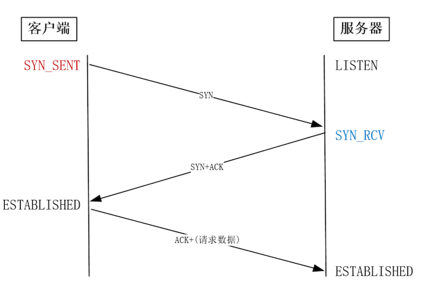

第一节 IT运维面试问题总结- Linux基础
https://www.yuque.com/docs/share/d3dd1e8e-6828-4da7-9e30-6a4f45c6fa8e
Linux基础
简述Linux主流的发行版？
Redhat、CentOS、Fedora、SuSE、Debian、Ubuntu、FreeBSD等。
简述Linux启动过程？
- 开机BIOS自检，加载硬盘。
- 读取MBR，MBR引导。
- grub引导菜单(Boot Loader)。
- 加载内核kernel。
- 启动init进程，依据inittab文件设定运行级别。
- init进程，执行rc.sysinit文件。
- 启动内核模块，执行不同级别的脚本程序。
- 执行
/etc/rc.d/rc.local。 - 启动tty，进入系统登陆界面。
简述Linux删除文件的原理？
Linux系统是通过link的数量来控制文件删除的，只有当一个文件不存在任何link的时候，这个文件才会被删除。
一般来说每个文件两个link计数器来控制：i_count和i_nlink。
当一个文件被一个程序占用的时候i_count就加1。
当文件的硬链接多一个的时候i_nlink也加1。
删除一个文件，就是让这个文件，没有进程占用，同时i_link数量为0。
简述Linux运行级别？
- 0：关机模式
- 1：单用户模式<==破解root密码
- 2：无网络支持的多用户模式
- 3：有网络支持的多用户模式（文本模式，工作中最常用的模式）
- 4：保留，未使用
- 5：有网络支持的X-windows支持多用户模式（桌面）
- 6：重新引导系统，即重启
简述Linux常见目录及其作用？
/（根目录）：Linux文件系统的起点；- boot：存放Linux系统启动做必须的文件；
- var：存放经常变换的文件；
- home：普通用户的家目录
- root：Linux系统的root用户家目录；
- bin：存放系统基本的用户命令；
- sbin：存放系统基本的管理命令；
- use：存放Linux应用程序；
- etc：存放Linux系统和各种程序的配置文件。
简述Linux操作系统常见的文件系统有？
- EXT3
- EXT4
- XFS
简述Linux系统中的buffer和cache区别？
buffer和cache都是内存中的一块区域，
当CPU需要写数据到磁盘时，由于磁盘速度比较慢，所以CPU先把数据存进buffer，然后CPU去执行其他任务，buffer中的数据会定期写入磁盘；
当CPU需要从磁盘读入数据时，由于磁盘速度比较慢，可以把即将用到的数据提前存入cache，CPU直接从Cache中读取数据。
简述Linux中inode和block？
inode节点是一个64字节长的表，表中包含了文件的相关信息，如：字节数、属主UserID、属组GroupID、读写执行权限、时间戳等。
在inode节点表中最重要的内容是：磁盘地址表。
文件名存放在目录当中，但Linux系统内部不使用文件名，而是使用inode号码识别文件。对于系统来说文件名只是inode号码便于识别的别称。
即Linux文件系统通过把inode和文件名进行关联来查找文件。当
需要读取该文件时，文件系统在当前目录表中查找该文件名对应的项，由此得到该文件相对应的inode节点号，通过该inode节点的磁盘地址表把分散存放的文件物理块连接成文件的逻辑结构。
文件是存储在硬盘上的，硬盘的最小存储单位叫做扇区sector，每个扇区存储512字节。操作系统读取硬盘的时候，不会一个个扇区地读取，这样效率太低，而是一次性连续读取多个扇区，即一次性读取一个块block。这种由多个扇区组成的块，是文件存取的最小单位。块的大小，最常见的是4KB，即连续八个sector组成一个block。
即512字节组成一个扇区（sector），多个扇区组成一个块（block），常见的块单位4KB，即连续八个扇区组成一个block。
一个文件必须占用一个inode，但至少占用一个block。
简述Linux文件系统修复fsck过程？
成功修复文件系统的前提是要有两个以上的主文件系统（即两个系统），并保证在修复之前卸载将被修复的文件系统，然后使用命令fsck对受到破坏的文件系统进行修复。
fsck检查文件系统分为5步，每一步检查系统不同部分的连接特性并对上一步进行验证和修改。
检查从超级块开始、然后是分配的磁盘块、路径名、目录的连接性、链接数目以及空闲块链表、inode。
简述Linux中软链接和硬链接的区别？
- 软链接
软链接类似于Windows的快捷方式功能的文件，可以快速连接到目标文件或目录。即再创建一个独立的文件，而这个文件会让数据的读取指向它连接的那个文件的文件名。例如，文件A和文件B的inode号码虽然不一样，但是文件A的内容是文件B的路径。读取文件A时，系统会自动将访问者导向文件B。这时，文件A就称为文件B的软链接。
- 硬链接
通过文件系统的inode链接来产生的新的文件名，而不是产生新的文件，称为硬链接。
一般情况下，每个inode号码对应一个文件名，但是Linux允许多个文件名指向同一个inode号码。意味着可以使用不同的文件名访问相同的内容。创建硬链接，源文件与目标文件的inode号码相同，都指向同一个inode。inode信息中的链接数这时就会增加1。
当一个文件拥有多个硬链接时，对文件内容修改，会影响到所有其他文件的内容；
删除一个文件名，不影响另一个文件名的访问，删除一个文件名，只会使得inode中的链接数减1。
- 区别
软链接与硬链接最大的区别：软链接是文件A指向文件B的文件名，而不是文件B的inode号码，文件B的inode链接数不会因此发生变化。
不能对目录做硬链接，但是通过mkdir命令创建一个新目录，通常其硬链接数应该有2个，因为常见的目录本身为1个硬链接，而目录下面的隐藏目录.（点号）是该目录的又一个硬链接，也算是1个连接数。
简述TCP三次握手，四次断开，及其优点和缺点，同时相对于UDP的差别？
TCP与UDP概念：
- TCP：传输控制协议，即面向连接；
- UDP：用户数据报协议，无连接的，即发送数据之前不需要建立连接
TCP与UDP的优缺点上的区别：
TCP的优点：
可靠，稳定。TCP的可靠体现在TCP在传递数据之前，会有三次握手来建立连接，而且在数据传递时，有确认、窗口、重传、拥塞控制机制，在数据传完后，还会断开连接用来节约系统资源。
- 三次握手：
- 第一次握手，主机A向主机B发出一个含同步序列号的标志位的数据段给主机B ，向主机B请求建立连接。通过这个数据段，A向B声明通信请求，以及告知B可用某个序列号作为起始数据段进行响应；
- 第二次握手，主机B收到主机A的请求后，用一带有确认应答(ACK)和同步序列号(SYN)标志位的数据段响应A。通过此数据段，B向A声明已收到A的请求，A可以传输数据了，同时告知A可用某个序列号作为起始数据段进行响应
- 第三次握手，主机A收到主机B的数据段后，再发送一个确认应答，确认已收到主机B 的数据段，之后开始正式实际传输数据。

ACK：TCP报头的控制位之一，对数据进行确认。确认由目的端发出，来告知发送端这个序列号之前的数据段都收到了。比如，确认号为X，则表示前X-1个数据段都收到了。只有当ACK=1时，确认号才有效，当ACK=0时，确认号无效，此时会要求重传数据，保证数据的完整性。
SYN：同步序列号，这个标志位只有在TCP建立连接时才会被置1，握手完成后SYN标志位被置0。
-
四次断开：
- 当主机A完成数据传输后，将控制位FIN置1，提出停止TCP连接的请求；
- 主机B收到FIN后对其作出响应，确认这一方向上的TCP连接将关闭，将ACK置1；
- 主机B再提出反方向的关闭请求，将FIN置1；
- 主机A对主机B的请求进行确认，将ACK置1，双方向的关闭结束
-
TCP的缺点：
慢、效率低、占用系统资源高、易被攻击：TCP在传递数据之前，要先建连接，需要消耗时间，而且在数据传递时，确认机制、重传机制、拥塞控制机制等都会消耗大量的时间，而且要在每台设备上维护所有的传输连接。
同时，每个连接都会占用系统的CPU、内存等硬件资源。而且，因为TCP有确认机制、三次握手机制，这些也导致TCP容易被人利用，实现DOS、DDOS、CC等攻击。
- DoS：拒绝服务（Denial of Servic），造成DoS的攻击行为被称为DoS攻击，其目的是使计算机或网络无法提供正常的服务。最常见的DoS攻击有计算机网络带宽攻击和连通性攻击。
- DDOS：分布式拒绝服务(DDoS:Distributed Denial of Service)，DDoS攻击指借助于客户/服务器技术，将多个计算机联合起来作为攻击平台，对一个或多个目标发动DDoS攻击，从而成倍地提高拒绝服务攻击的威力。
- UDP的优点：
快、比TCP稍安全、没有TCP的握手、确认、窗口、重传、拥塞控制等机制，UDP是一个无状态的传输协议，所以它在传递数据时非常快。没有TCP的这些机制，UDP被攻击者利用的漏洞就要少一些。但UDP也是无法避免攻击的，比如：UDP Flood攻击。
UDP Flood攻击检测：短时间内向特定目标不断发送 UDP 报文，致使目标系统负担过重而不能处理合法的传输任务，就发生了 UDP Flood。启用 UDP Flood 攻击检测功能时，要求设置一个连接速率阈值，一旦发现保护主机响应的 UDP 连接速率超过该值，防火墙会输出发生 UDP Flood 攻击的告警日志，并且根据用户的配置可以阻止发往该主机的后续连接请求。
- UDP的缺点：
不可靠、不稳定。因为UDP没有那些可靠的机制，在数据传递时，如果网络质量不好，就会很容易丢包。
- TCP应用场景：
当对网络通讯质量有要求的时候，比如：整个数据要准确无误的传递给对方，要求可靠的应用，比如HTTP、HTTPS、FTP等传输文件的协议，POP、SMTP等邮件传输的协议。
- UDP应用场景：
当对网络通讯质量要求不高的时候，要求网络通讯速度能尽量的快。比如QQ语音、QQ视频、TFTP 。
简述TCP/IP及其主要协议？
TCP/IP协议是一个协议簇，其中包括很多协议的。
TCP/IP协议包括应用层、传输层、网络层、网络访问层（网络接口层、网际层）。
应用层：应用程序间沟通的层
- 超文本传输协议(HTTP)：万维网的基本协议；
- 文件传输(TFTP)：简单文件传输协议；
- 远程登录(Telnet)：提供远程访问其它主机功能，它允许用户登录internet主机，并在这台主机上执行命令；
- 网络管理(SNMP)：简单网络管理协议，该协议提供了监控网络设备的方法，以及配置管理、统计信息收集、性能管理及安全管理等；
- 域名系统(DNS)：域名解析服务，该系统用于在internet中将域名及转换成IP地址；
传输层：提供了节点间的数据传送服务，给数据包加入传输数据并把它传输到下一层中，这一层负责传送数据，并且确定数据已被送达并接收。
- 传输控制协议（TCP）
- 用户数据报协议（UDP）
网络层：负责提供基本的数据封包传送功能，让每一个数据包都能够到达目的主机（但不检查是否被正确接收）。
- Internet协议(IP) ：根据网间报文IP地址，从一个网络通过路由器传到另一网络；
- ICMP：Internet控制信息协议(ICMP)；
- ARP：地址解析协议(ARP) ——"最不安全的协议"。
- RARP：反向地址解析协议(RARP)：
网络访问层：又称作主机到网络层(host-to-network)，IP地址与物理地址硬件的映射及IP封装成帧，基于不同硬件类型的网络接口，网络访问层定义了与物理介质的连接。
简述OSI模型及其主要协议？
OSI模型是一个开放式系统互联参考模型，该模型人为的定义了七层结构。由下至上及其主要作用为：
- 物理层：OSI的物理层规定了通信端点之间的机械特性、电气特性、功能特性以及过程特性，该层为上层协议提供了一个传输数据的物理媒体。该层数据的单位称为比特(bit)。其主要有：EIA/TIA、RS-232、EIA/TIA、RS-449、V.35、RJ-45、fddi令牌环网。
- 数据链路层：定义了在单个链路上如何传输数据，其主要作用包括：作用包括物理地址寻址、数据的成帧、流量控制、数据的检错、重发等。该层数据的单位称为帧(frame)。其主要有：ARP、RARP、SDLC、HDLC、PPP、STP、帧中继。
- 网络层：定义了端到端的包传输，定义了能够标识所有结点的逻辑地址，还定义了路由实现的方式和学习路由的方式。为了适应最大传输单元长度小于包长度的传输介质，网络层还定义了如何将一个包分解成更小的包的分段方法。主要负责寻找地址和路由选择，网络层还可以实现拥塞控制、网际互连等功能。该层数据的单位称为数据包(packet)。主要有：IP、IPX、RIP、OSPF。
- 传输层：主要功能：
- 为端到端连接提供传输服务；
- 这种传输服务分为可靠和不可靠的，其中TCP是典型的可靠传输，而UDP则是不可靠传输；
- 为端到端连接提供流量控制，差错控制，重新排序，服务质量等管理服务。
- 会话层：他定义了如何开始、控制和结束一个会话，即负责建立和断开通信连接（数据流动的逻辑通路）。主要有：RPC、SQL、NetBIOS。
- 表示层：定义数据格式及加密。主要负责数据格式的转换，确保一个系统的应用层信息可被另一个系统应用层读取。主要有：加密、ASII、TIFF、JPEG、HTML、PICT。
- 应用层：与其他计算机进行通讯的一个应用，它是对应应用程序的通信服务的，为应用程序提供服务并规定应用程序中通信相关的细节。主要有：Telnet、HTTP、FTP、WWW、NFS、SMTP。
简述IP协议、IP地址？
IP协议(Internet Protocol)：又称互联网协议，是支持网间互连的数据报协议。它提供网间连接的完善功能，包括IP数据包规定互连网络范围内的IP地址格式。
为了实现连接到互联网上的结点之间的通信，必须为每个结点（入网的计算机）分配一个地址，并且应当保证这个地址是全网唯一的，这便是IP地址。
目前的IP地址（IPv4：IP第4版本）由32个二进制位表示，每8位二进制数为一个整数，中间由小数点间隔，整个IP地址空间有4组8位二进制数，由表示主机所在的网络的地址以及主机在该网络中的标识共同组成。为了便于寻址和层次化的构造网络，IP地址被分为A、B、C、D、E五类，商业应用中只用到A、B、C三类。
- A类地址：网络标识由第一组8位二进制数表示，网络中的主机标识占3组8位二进制数，网络标识的第一位二进制数取值必须为"0"。A类地址允许有126个网段，每个网络大约允许有1670万台主机，通常分配给拥有大量主机的网络（如主干网）。
1.0.0.1－127.255.255.254 - B类地址：网络标识由前两组8位二进制数表示，网络中的主机标识占两组8位二进制数，网络标识的前两位二进制数取值必须为"10"。B类地址允许有16384个网段，每个网络允许有65533台主机，适用于结点比较多的网络（如区域网）。
128.1.0.1－191.255.255.254 - C类地址：网络标识由前3组8位二进制数表示，网络中主机标识占1组8位二进制数，网络标识的前3位二进制数取值必须为"110"。具有C类地址的网络允许有254台主机，适用于结点比较少的网络（如校园网）。
192.0.1.1－223.255.255.254
为了便于记忆，通常习惯采用4个十进制数来表示一个IP地址，十进制数之间采用句点"."予以分隔。这种IP地址的表示方法也被称为点分十进制法。
简述静态路由和动态路由及其特点？
- 静态路由：由系统管理员创建的路由，适用于网关数量有限的场合，且网络拓朴结构不经常变化的网络。其缺点是不能动态地适用网络状况的变化，当网络状况变化后需要网络管理员手动修改路由表。
- 动态路由：由路由选择协议动态构建的路由，路由协议之间通过交换各自所拥有的路由信息实时更新路由表的内容。动态路由可以自动学习网络的拓朴结构，并更新路由表。其缺点是路由广播更新信息将占据大量的网络带宽。
简述NAT的几种类型，及其原理？
常见的NAT主要有DNA和SNAT。
- SNAT：指在数据包从网卡发送出去的时候，把数据包中的源地址部分替换为指定的IP。此时，接收方就认为数据包的来源是被替换的那个IP的主机。
- DNAT：指数据包从网卡发送出去的时候，修改数据包中的目的IP。此时，若访问A，但因此DNAT的存在，所有访问A的数据包的目的IP全部修改为B，那么，实际上访问的是B。
简述包过滤防火墙和代理应用防火墙的区别？
- 包过滤防火墙：工作在网络层，根据包头中的源IP地址、目标IP地址、协议类型、端口号进行过滤；
- 代理应用防火墙：工作在应用层，使用代理服务器技术，将内网对外网的访问，变为防火墙对外网的访问，可以对包的内容进行分辨，从而过滤。